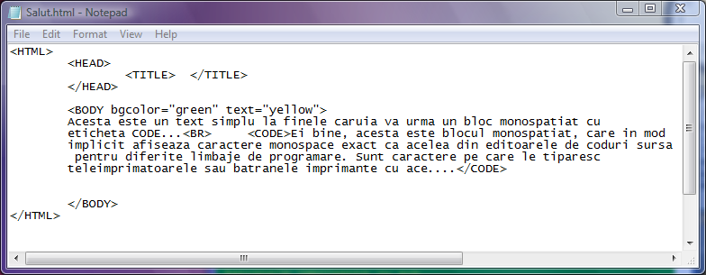
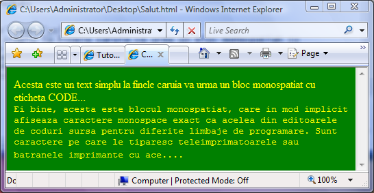
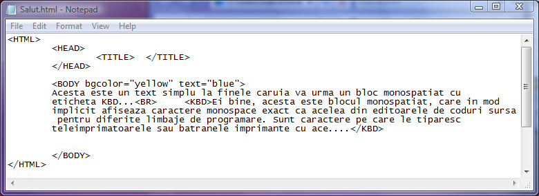
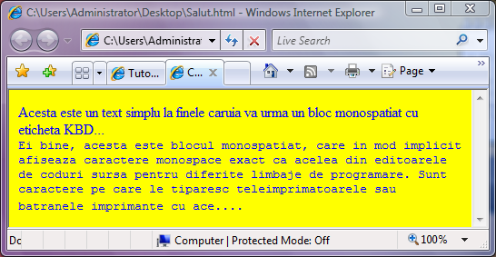

Blocuri de text monospatiat
Blocurile de text monospatiate pot fi editate cu ajutorul mai multor etichete,
printre care perechea CODE respectiv /CODE. Iata la lucru modul de creare al unui bloc de text
monospatiat:


Exact acelasi efect il produc si etichetele KBD (prescurtare de la keyboard) si perechea sa /KBD
sau TT (de la teletype) si perechea sa /TT...
Iata mai jos un exemplu de utilizare a etichetei KBD pentru obtinerea unui bloc monospatiat:


Inapoi la Blocuri de text...